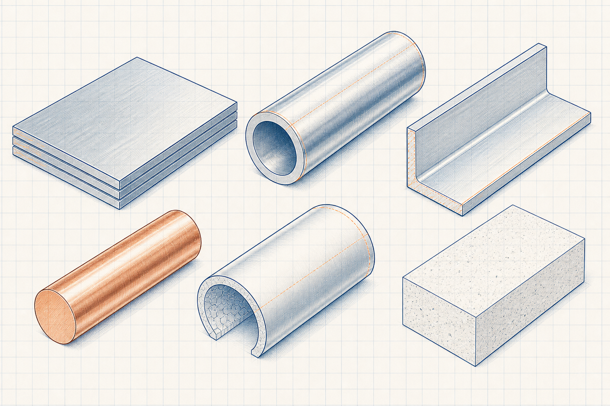

Reference-data library
Materials and Materials of Construction
Explore metallic and non-metallic materials, their typical industrial use and the groups that support responsible material selection.

Explore by category
Material categories
01
Ferrous Metals
Carbon steels, stainless steels and alloy steels for structural, piping and high-temperature industrial service.
Open topic group →02Non-Ferrous Metals
Aluminium, copper, brass and bronze materials and their common industrial applications.
Open topic group →03Non-Metallic Materials
Polymers, linings, refractories and insulation materials for specified service conditions.
Open topic group →